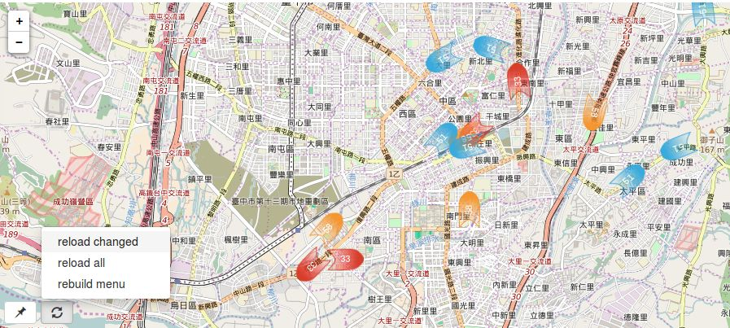

Potluckmap: Bring Your Data to the Collaborative Map
What Can Potluckmap Do for You?
Potluckmap displays your (perhaps along with others') geographic data in OpenStreetMap. It is written in javascript and has several interesting features:

- You can specify several data sources and it displays all of them on a single map.
- The data sources can be provided in some of the many formats supported by leaflet-omnivore, including .geojson, .gpx, .csv . Additionally, potluckmap also accepts the output of OverpassTurbo requests.
- Each data source can be instructed to refresh itself at fixed time intervals.
- Each marker can be rotated at a different angle. (only partially implemented)
- You can run potluckmap completely offline if you have a local tile server and use only local data sources.
(1) and (2) makes it suitable for collaboration among different geographic data providers such as different government departments. Each party can focus on simply producing its own textual data. The idea is to separate map data from presentation, analogous to the idea of "separation of content from presentation" in word processing or web publishing (html + css).
(3) and (4) makes it suitable for displaying moving vehicles such as buses, cars, and bikes. City governments all over the planet would save a lot of map-coding efforts if they simply publish live bus information in one of the above-mentioned text formats. Developers can cooperate on a single map app. Or more likely, there will be many compatible competing apps, each serving all cities at once. Each traveller can choose her/his favourite and use just that one app across all cities across the globe.
Privacy-conscious users and users who need to use maps offline will find (5) particularly appealing.
Demo
The following is an iframe that includes the demo map. You can also visit the demo map by itself.
Trying Out Potluckmap Online Without Installing It
Head over to the demo page and begin playing with it. See a later section on how to save and restore your configuration.
Installing Potluckmap
Just download potluckmap and open potluckmap.html in firefox.
Chrome or chromium users who want to use local data sources
have two options. Either install a local web server and
access potluckmap.html through the web server,
or start the browser from the command line:
chromium-browser --allow-file-access-from-files.
Please see javascriptCanReadLocalFiles for details.
It is possible to share one copy of the codes among
several web pages each of which needs its own map.
When including the potluckmap.js script
In the <script ...> line of each html page,
give it the id "potluckmap_script"
and append "?config=xyz.json" to the src attribute
where xyz.json is the path of this page's
own configuration file, like this:
Just append "?config=xyz.json" to the html page's url
and potluckmap.js will use xyz.json as the configuration file.
<script id="potluckmap_script" src="potluckmap.js?config=m/cyut/config.json"></script>
See cyut-bus.html for a complete example.
If you want to run potluckmap offline, you need to have a local tile server.
Basic Setup
Potluckmap does not have a fancy user interface (yet).
You have to edit its configuration file config.json manually.
[2016/11/09: configuration file format changed!
The new config file now only contains a small structure
that corrospends to the "startval" portion of the old config file.]
You can edit the following fields
of the
in the configuration file:startval portion
- "title": the title of your map.
- "sources": the data sources of your map.
- "views": a list of frequently used views as defined by their names, zoom levels, and geographic coordinates.
More details in later sections.
Using Potluckmap
In the bottom left corner there are a few menu buttons.
The "pushpin" menu button include options for you to:
- [some place name] switch to a predefined view
- [remember here] replace the current view with what you are looking at right now
The "reload" menu button include options for you to:
- [reload all] reload all data sources
- [reload changed] reload those data sources that have been manually changed in the configuration area
- [rebuild menu] rebuild the pushpin menu after you manually add entries to, delete entries from, or change the names of the views list in the configuration area.
Saving and Restoring Your Configuration
Below the map is the configuration area. Potluckmap uses json-editor as a lazy programmer's user interface -- options that don't yet have a normal UI can be changed here. For example, you can add views, delete views, change the view name here. However, changes may not go into effect immediately. That's why there are menu items like [reload changed] and [rebuild menu] in the map UI.
After you have configured your sources and views,
you may want to save it.
Press the [Edit JSON] button, copy the content,
and (using a text editor) paste it to the
"startval" portion of your new config.json file
save it as your new config.json file.
(Note: the [save] button does not save anything to the disk.
It only confirms your manual editing within this session.)
Potluckmap will then use your new configuration the next time it is run.
If you are visiting
the demo page, then of course it is always
the demo map that gets displayed upon opening the page.
You can still ask it to display your own map
as long as your data files have a public url.
Simply press the [Edit JSON] button, and paste
the "startval" portion of
your config.json file into the edit window.
Then choose "reload all" from the map.
Beware that the configuration file may undergo changes as potluckmap is being actively developed. Your old configuration file may not always work with a newer version.
More Details About the Configuration Options
Sources
You can specify the format and the url of each data source.
Leaving the format field empty instructs potluckmap to
choose the format parser according to the file name extension of the url.
Features of type "Point" are styled using the these fields
shap, glyph_set, glyph,
and optionally facing.
The available set of shapes can be previewed at
icons.png .
Leaving the glyph_set empty,
you can type any short text in the glyph field
as the label for markers.
Alternatively, choosing glyphicon as the glyph_set,
you can type the name of one of the
bootstrap glyphicons in the glyph field.
Additionally, the facing field may contain
a valid mathematical expression containing one or more
numerical fields from the source data file.
In this case, the icon is rotated by this amount of angle (in degrees).
{kind=link}
Features of type "LineString" are styled
using the style field. See
cyut bus for example.
The refresh field is the number of seconds
for automatically refreshing this source.
However, it must be greater than or equal to 20.
See
Leaflet.Icon.Glyph for more details about shape
and glyph.
Tile Provider
This option employs the leaflet-providers project. Visit their demo to see what each tile provider looks like.